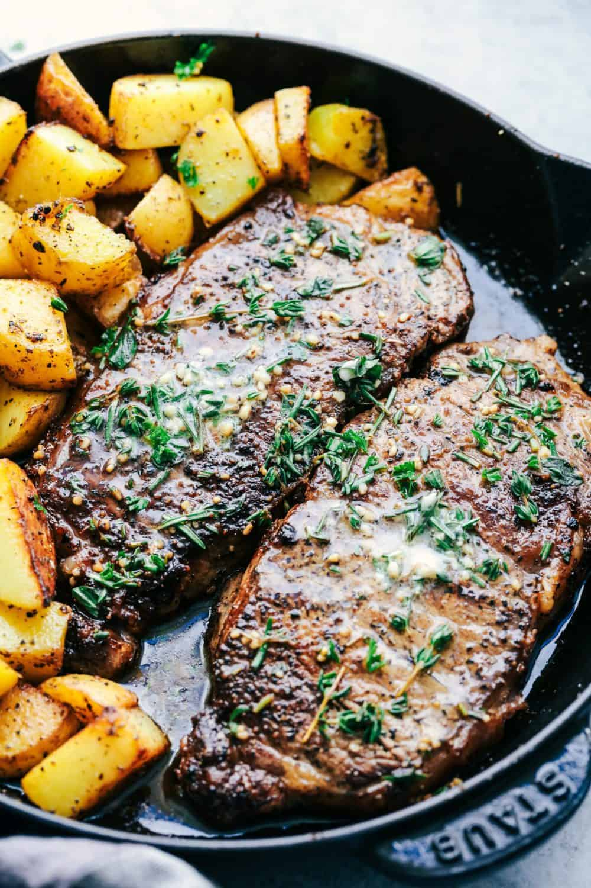

Garlic Butter Steak

Description
This steak is the ultimate indulgence for any meat lover out there! The
tender and juicy steak is seared to perfection and bathed in a rich garlic
butter sauce, which adds a depth of flavor that's out of this world.
Ingredients
- 1 ribeye steak, 2-inch (5-cm)-thick
- kosher salt, to taste
- freshly ground black pepper, to taste
- 3 tablespoons canola oil
- 3 tablespoons unsalted butter
- 3 cloves garlic, peeled and smashed
- 2 sprigs fresh rosemary
- 3 sprigs fresh thyme
Preparation
-
Preheat oven to 200°F (95°C). Set a wire rack on top of a rimmed baking
sheet.
- Generously season the steak on all sides with salt and pepper.
-
Transfer the steak to the wire rack, then bake for 45–60 minutes, until
the internal temperature reaches about 125°F (51°C) for medium-rare, or
your desired doneness.
-
Heat the canola oil in a cast-iron skillet over high heat until smoking.
(Do not use olive oil, as its smoke point is significantly lower than
that of canola oil and will smoke before reaching the desired cooking
temperature.)
-
Sear the steak for 30 seconds on the first side, then flip. Add the
butter, garlic, rosemary, and thyme and swirl around the pan. Place the
garlic and herbs on top of the steak and baste the steak with the butter
using a large spoon for about 30 seconds, then flip and baste the other
side for about 15 seconds. Turn the steak on its side to render off any
excess fat.
-
Transfer the steak to a cutting board or wire rack to rest for about 10
minutes. (Slicing the steak before the resting period has finished will
result in a lot of the juices leaking out, which may not be desirable.)
-
Slice the steak into ½-inch (1-cm) strips, then fan out the slices and
serve.
- Bon Appetit!